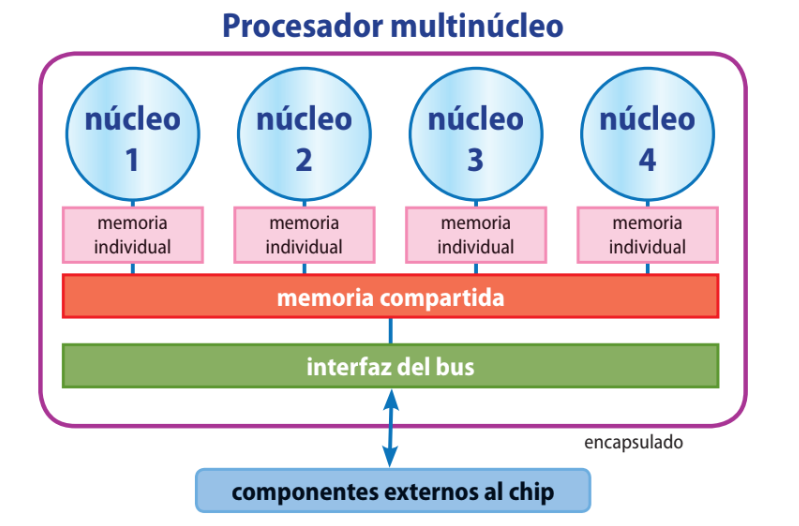
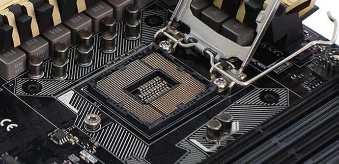
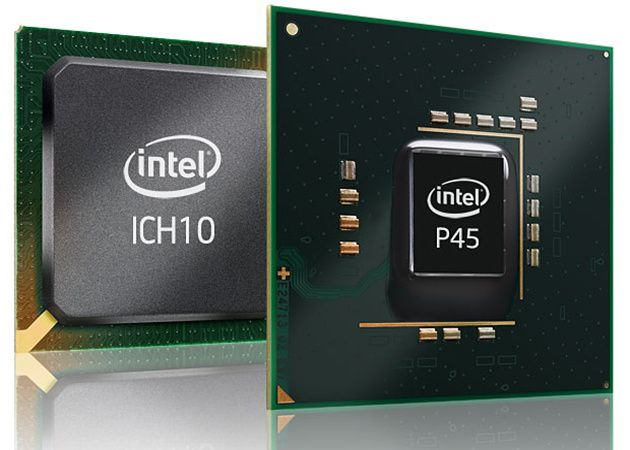
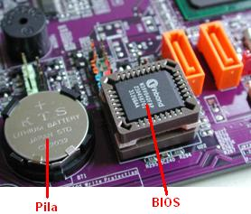
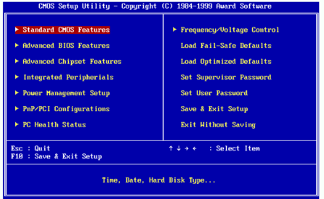
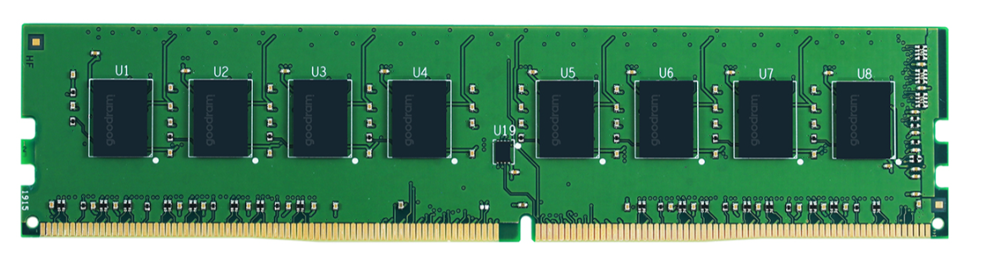
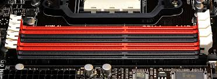
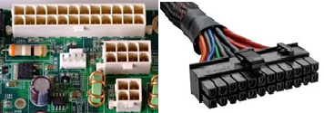

Todavía no has decidido que estudiarás el próximo año, en cualquier caso, vas a necesitar un nuevo ordenador porque el tuyo está bastante mal. En la siguiente unidad aprenderemos a escoger el mejor ordenador en cada caso e instalar el software correctamente.
La placa base o placa madre (motherboard) es la tarjeta con el circuito impreso más grande al abrir un ordenador. Forma, junto con los componentes que van soldados o insertados, la parte fundamental del sistema. Entre los principales circuitos y elementos encontramos el microprocesador, el chipset, la memoria RAM, la ROM y los conectores de expansión.
Los diseños de placa base más comunes actualmente están basados en el estándar ATX y sus variantes más compactas (Micro-ATX y Mini-ITX), que sustituyeron al antiguo formato AT ya en desuso.
El microprocesador es la parte más importante del ordenador. Se encarga de procesar los datos y realizar las operaciones aritmético-lógicas para después enviarlas al exterior.
Físicamente es un chip que contiene un conjunto de circuitos integrados con miles de millones de transistores y que va montado sobre un zócalo (socket o slot).
Por ejemplo, los microprocesadores 8086, usados en 1980, contenían entre 10 y 100 transistores, mientras procesadores como los Apple M1/M2/M3, AMD Ryzen 9 o Intel Core i9 superan los 20.000 millones de transistores.
Los principales fabricantes de microprocesadores son Intel y AMD, aunque también podemos encontrar otros, como Apple (chips M1, M2, M3), Qualcomm (Snapdragon) y ARM (diseño de arquitecturas usadas en casi todos los móviles).
Las partes lógicas en que podemos dividir un ordenador las hemos visto en el apartado “Arquitectura de computadores”.
Las formas de mejorar la capacidad de un microprocesador son:
Aumentar el número de transistores, haciéndolos cada vez más pequeños, y aproximarlos entre sí. En la actualidad, Intel ha logrado llegar a una separación mínima de 10 nm (nanómetros), lo que permite integrar millones de transistores por milímetro cuadrado.
Aumentar la frecuencia de funcionamiento del procesador, para que trabaje más rápido. Cualquiera de estas dos soluciones provoca un calentamiento del microprocesador. Si éste alcanza altas temperaturas, se puede bloquear, aun superponiendo un ventilador o un disipador de calor, y esto nos supone una limitación difícil de superar.
Una tercera vía es aumentar el número de procesadores trabajando en paralelo. Hoy en día se comercializan con dos procesadores (dual-core), cuatro procesadores (quad-core)..., y así hasta los actuales 32 núcleos en PCs de alto rendimiento (Threadripper) y hasta 96 o más núcleos en servidores (AMD EPYC, Intel Xeon). Esto permite realizar múltiples tareas de forma simultánea sin calentar en exceso el dispositivo. Son los llamados procesadores multinúcleo
(multi-core).
Un procesador multinúcleo es un solo componente (chip) con dos o más procesadores independientes (llamados núcleos), que son las unidades que leen y ejecutan las instrucciones del programa.
Cuando se dice que un ordenador dispone de un procesador quad-core de 2 GHz, significa que los cuatro núcleos están trabajando a 2 GHz.
En procesos que se ejecutan en paralelo, las ventajas son aún mucho mayores.
El rendimiento de un procesador multinúcleo no es igual al rendimiento del mismo número de procesadores por separado. Por ejemplo, un procesador de cuatro núcleos no es cuatro veces más rápido que un único procesador.

Procesadores multinúcleo
En él se inserta el microprocesador. Cuando abrimos el ordenador, lo que habitualmente vemos es un gran ventilador con un disipador de calor de aluminio debajo. Por debajo del disipador se añade pasta térmica que mejora la disipación del calor y, por último, el microprocesador sobre el zócalo.

Zócalo
El chipset es el conjunto de controladores integrados en la placa base que gestionan la comunicación entre el procesador y los demás componentes del sistema, como memoria, almacenamiento y periféricos.
En los ordenadores actuales, gran parte de las funciones clásicas del chipset se han integrado en el propio procesador (control de memoria y gráficos), quedando el PCH (Platform Controller Hub) como el chip encargado de gestionar interfaces como PCI Express, USB, SATA, audio y red.
Aunque ya no tiene tanta relevancia como antes, el chipset sigue determinando las características y posibilidades de expansión de un equipo. Hoy la compatibilidad depende más del socket del procesador y del soporte del fabricante de la placa base que del "chipset" en sí.

Chipset
La BIOS es un circuito integrado en el que se guarda el programa de arranque del ordenador. Normalmente se identifi ca entre otros porque suele llevar escrita la palabra BIOS, como en la imagen. Para que no se borren ciertos parámetros de configuración, la BIOS necesita una pila.
La pila es una pequeña batería que se encarga de dar corriente eléctrica a la BIOS para que no pierda la con guración que hayamos realizado, después de apagar el ordenador. Un síntoma típico de que la pila se ha agotado es cuando con guramos el reloj del ordenador y, después de apagarlo y volverlo a encender, se ha perdido la con guración. En muchos casos se trata de una pila CR2032, similar a la de los relojes digitales.

Pila
La BIOS es un chip de memoria que viene instalado en la placa base y que contiene un pequeño programa que se ejecuta al encender el ordenador. Este programa realizar las funcionalidades básicas, como:
Reconocimiento de los dispositivos conectados.
Pruebas de los dispositivos, vídeo y manejo del teclado
Carga del sistema operativo.

Bios
A diferencia de otros elementos de la placa base, no es fácil identificar la BIOS en la placa base. Para poder localizarla, se buscará en el manual de instrucciones.
Un fallo en la BIOS puede dejar inutilizada la placa base. Por eso, a veces se incluyen dos BIOS. Es lo que se llama DualBIOS. Los principales fabricantes de BIOS son AWARD y AMI.
La memoria es un componente esencial que almacena temporalmente los datos e instrucciones que la CPU (Unidad Central de Procesamiento) necesita para ejecutar tareas y aplicaciones.
Podemos establecer la siguiente clasificación de las memorias internas:
RAM (random access memory): memoria de acceso aleatorio (es decir, se puede acceder a cualquier parte de ella). Permite la lectura y la escritura. Es volátil: cuando se apaga la alimentación,la información contenida en ella se pierde. Físicamente, la RAM es una tarjeta que se inserta en la ranura correspondiente de la placa base.
Los ordenadores actuales instalan memorias de 16 GB a 64GB.
Se pueden clasificar a su vez en estáticas (SRAM) y dinámicas (DRAM).
SRAM (static RAM): no necesita que se refresque la carga de la memoria. Tiene menor capacidad que la DRAM pero es más rápida (y más cara). Existen varios tipos (que se diferencian en la forma de trabajar, el consumo, la velocidad, si tienen o no un buff er,etc.).
DRAM (dynamic RAM): necesita que, transcurrido un tiempo, se refresque la carga de la memoria. Tiene gran capacidad y bajo coste. Es una de las más extendidas en la actualidad.
Las más utilizadas son las SDRAM (synchronous dynamic RAM), desde la original SDR a las posteriores DDR, DDR2, DDR3, DDR4 y DDR5.
ROM (read only memory): memoria de sólo lectura. No es volátil: la información no se pierde al apagar el ordenador. Es ideal para almacenar las rutinas básicas del hardware, como el programa de arranque del ordenador (BIOS), el chequeo de la memoria y otros. Físicamente es un chip que va soldado a la placa base.
Flash: se utiliza mucho en dispositivos móviles, cámaras, teléfonos, etc. Es fácil de borrar y de utilizar, y muy útil como BIOS.

RAM DDR4
Los zócalos de memoria son los conectores para insertan los módulos de memoria RAM. El número de zócalos de memoria puede varia de una placa a otra.
Los zócalos de memoria de las placas base de los ordenadores de sobremesa son del modelo DIMM. Dentro del modelo DIMM existen los tipos DDR1, DDR2, DDR3 y DDR4. Recientemente han lanzado al mercado el nuevo tipo DDR5. La diferencia entre los distintos tipos DIMM se encuentra en el número de contactos y en la posición de una protuberancia que hay en el interior del zócalo y que debe coincidir con una muesca o hendidura en el módulo de memoria RAM. De este modo, se asegura que sólo se utilizan módulos de memoria RAM
compatibles con la placa.

Slots memoria RAM
Los buses de expansión son los conectores para instalar las tarjetas de expansión, que pueden ser de muchos tipos (tarjetas gráficas, tarjetas de sonido, tarjetas de red, …). También se le llaman ranuras o slot.
Algunas funciones pueden estar integradas en la placa base, dejando ranuras libres.
Actualmente, el estándar utilizado es PCI Express (PCIe), con variantes como x1, x4, x8 y x16 según la velocidad y el tipo de tarjeta.
Ranuras antiguas como AGP o PCI tradicional ya no se usan en equipos modernos.
Ranuras de extensión
Los conectores son aquellas partes de la placa base en las que se enchufan cables para conectar distintos dispositivos. Dependiendo del dispositivo que se conecte, vamos a ver tres tipos de conectores:
Conectores de corriente.
Los conectores de corriente son aquellos donde se conecta la fuente de alimentación (ATX y ATX _12V). A través de estos conectores, se suministra corriente eléctrica a la placa base y al microprocesador. También se pueden considerar parte de este tipo de conectores, aquellos conectores donde se conectan los ventiladores del microprocesador (CPU_FAN) y de la caja (SYS_FAN) para recibir corriente
eléctrica

Conexiones ATX
Conectores de almacenamiento.
Los conectores de almacenamiento son aquellos conectores que se utilizan para conectar dispositivos de almacenamiento.
Inicialmente, los conectores de almacenamiento que existían en las placas base eran los denominados IDE (destinados a los discos duros) y FDD (para la conexión de disqueteras). Posteriormente, se ha incorporado otro tipo de conector denominado SATA, que se emplea para conectar discos duros y unidades ópticas CD/DVD.
Conectores del panel frontal.
Son los puertos en que se conectan la red (RJ45) y los dispositivos externos, las pantallas, proyectores y televisiones (HDMI) y otros dispositivos, como memorias, teléfonos, impresoras, etc. (USB tipos A y C).
En la siguiente actividad trabajareis en grupos para presentar uno de los elementos que componen un ordenador.
El reto consiste en explicar a la clase el tema que os toque, de forma clara y sencilla.
Objetivos
Investigar sobre un componente del PC.
Preparar una presentación mínima de 10 apartados (incluyendo portada, índice y webgrafía).
Exponerla en clase durante 5 minutos.
Aprender a trabajar en equipo y comunicar la información de forma ordenada.
Estructura de la presentación: Todas las presentaciones deberán incluir los siguientes apartados:
Portada (título y grupo).
Índice.
¿Qué es?
Función principal.
Características técnicas.
Tipos o tecnologías relacionadas.
Componentes o partes más importantes.
Marcas o fabricantes destacados.
Ejemplo actual (modelo real del mercado).
Webgrafía (páginas consultadas).
Posibles temas: Cada grupo elegirá uno de estos componentes para desarrollar:
Monitores
Tarjeta gráfica
Memoria RAM
Procesadores
Impresoras
Dispositivos de entrada
Placa base
Discos duros
Recordad que la nota será por la calidad de la presentación y el trabajo en equipo.
Existe una práctica, algo arriesgada, que consiste en aumentar la velocidad de proceso del microprocesador, denominada overclocking. Investiga cómo se consigue e indica cuáles son los riesgos al realizar dicha acción.
Investiga para qué sirve el programa BIOS SETUP de un ordenador.
Responde a las siguientes preguntas:
¿Qué funciones principales permite configurar el BIOS SETUP?
¿Dónde se almacenan los datos que modificas en el BIOS? Explica por qué se necesita una pila (batería) para mantenerlos.
Explica con tus palabras cómo estas configuraciones pueden afectar al funcionamiento de tu ordenador
AA1.8 Identifica los componentes de una placa base¶
(C.ESP2 / CE2.2 / IC1-3p)
Para comprobar si te has familiarizado con la estructura de una placa base, sus elementos más comunes, localiza sobre la siguiente placa base, todos los elementos que hemos estudiado.
AA1.9 Identifica los componentes de una placa base con la ayuda del manual¶
(C.ESP2 / CE2.2 / IC1-3p)
Como ya hemos dicho en clase, existen muchos tipos de placas bases, por ello todas vienen asociada a un manual de instrucciones donde se muestra un esquema con el que poder localizar los elementos más relevantes de la placa.
Consultando el esquema del manual de instrucciones, localiza sobre la placa base GIGABYTE GA-EX58-UD3R, cuya figura se muestra a continuación, todos los elementos identificados en la placa que hemos estudiado.
Para ello, puedes consultar el manual de la placa GIGABYTE GA-EX58-UD3R en el siguiente enlace
GA-EX58-UD3R
AA1.10 Identifica los componentes de una placa base con la ayuda del manual II¶
(C.ESP2 / CE2.2 / IC1-3p)
Como ya hemos dicho en clase, existen muchos tipos de placas bases, por ello todas vienen asociada a un manual de instrucciones donde se muestra un esquema con el que poder localizar los elementos más relevantes de la placa.
Consultando el esquema del manual de instrucciones, localiza sobre la placa base GIGABYTE GA-EX58-UD3R, cuya figura se muestra a continuación, todos los elementos identificados en la placa que hemos estudiado.
Para ello, puedes consultar el manual de la placa GIGABYTE GA-EX58-UD3R en el siguiente enlace
En esta actividad vamos a ver la compatibilidad del microprocesador y la placa base.
Un microprocesador no se puede montar en cualquier placa base. Para que se puede montar:
El microprocesador tiene que tener el formato adecuado para el tipo de socket de la placa base.
El microprocesador tiene que ser compatible con el chipset de la placa base.
Para completar la actividad, busca un ejemplo de procesador y dos modelos de placa base que sean compatibles. Debes indicar:
Nombre completo del microprocesador (fabricante y modelo de microprocesador).
Nombre completo de la primera placa base (fabricante y modelo de placa).
Nombre completo de la segunda placa base (fabricante y modelo de la placa).
Tipo de socket.
Modelo de chipset de las placas bases seleccionadas.
Puedes utilizar la información de páginas web como Pccomponentes.
Para facilitarte la actividad, mira el siguiente ejemplo.
Nombre completo del microprocesador (fabricante y modelo de microprocesador): Intel Core i7-9700K 3.6 Ghz
Nombre completo de la placa base (fabricante y modelo de placa): MSI Z390-A PRO
Nombre completo de la placa base (fabricante y modelo de placa): Asus Prime Z390-P
Tipo de socket: LGA 1151
Modelo de chipset de las placas bases seleccionadas: Intel Z390
Todavía no has decidido qué estudiarás el próximo año, pero para cualquier opción necesitarás un ordenador nuevo, porque el tuyo ya está bastante anticuado. Tu objetivo será diseñar un ordenador de sobremesa ajustado a un presupuesto máximo de 500 €, buscando el mejor equilibrio entre rendimiento y precio.
Para ello deberás:
Investigar componentes: CPU, placa base, memoria RAM, almacenamiento, tarjeta gráfica, fuente de alimentación, caja y sistema operativo.
Comparar modelos y precios en distintas tiendas online fiables.
Razonar tus elecciones explicando por qué has escogido cada componente y cómo se complementan entre sí.
Deberás entregar una tabla en Markdown con la siguiente información:
Además, añade al final un pequeño comentario explicativo (3‑5 líneas) justificando tu selección global: por qué este conjunto de componentes funciona bien dentro del presupuesto y cómo permite usar programas actuales de forma fluida.
 Hardware¶
Hardware¶